Hello, friends and family! We're getting married! We're so glad you all are
going to come and celebrate with us.
Alissa and Max met the afternoon that Max moved away to college at Humboldt
State in August of 2004, when Max was 17. Alissa was walking down the hall from
the laundry room, and something fell out of her basket. Max picked it up off
the ground for her. "Hey you dropped your, umm.. underwear." Alissa, who was
actually picking up laundry for her college dorm mate, was mortified. She
decided to pretend like it was her underwear instead of trying to awkwardly
deny ownership. "Oh!! My underwear! Great… thanks." They both laughed, and the
rest is history.
Alissa and Max quickly became close friends in the dorms and hung out every
single day together with their group of beloved freshman dorm mates. In fact,
the photo to the left was taken in December 2004 on a group winter trip to San
Diego, when Alissa and Max were still just best friends. They stayed close
friends and in October of 2005, at the age of 19, they began dating.
Alissa and Max have been lucky enough to have seen each other change and grow
over the past 8 years. They went through several changes in their college majors
and life dreams, moved to different places, and travelled together. Alissa
saw Max morph from artist to accomplished musician to environmental engineer to
budding physicist to software engineer. Max saw Alissa develop her culinary
skills, leave chemistry, return to chemistry, plan to pursue a career in
politics, and then start her first business, a restaurant in Arcata, Ca.
They have always grown and changed together, inspiring each other to be better
people and follow their dreams.
Max proposed to Alissa on December 4th, 2011 in Berkeley, Ca where they
currently live. Alissa was putting on her tennis shoes in her bedroom on her
way to the gym when Max suddenly came in, got down on one knee, and proposed,
offering her a beautiful green emerald ring! Those of you who know their
relationship well know that this was a very fitting way for them to become
engaged.
They can't wait to live the rest of their lives together.
Keeping with our down-home wedding style, we are having a "rehearsal" BBQ
instead of formal dinner on Saturday, May 26th. The BBQ will be at Stafford
Lake in Novato, Ca from 2:30-6pm. Come on out to enjoy the beautiful
scenery and wildlife around the lake, relax in the sun, play some sports and
games, eat, drink, and meet new family. The picnic site is highly accessible
from the parking lot and has bathrooms close by. We very much would like to
make this get-together about getting to know each other and reconnecting with
those we have not seen in a long while, so there may just be some group
activities to aid in this endeavor! Bring a camp chair if possible (there will
be many picnic tables and blankets, however) and of course, your smiling
selves.
The wedding ceremony and reception will be at the home of the Max's
parents, Alice and Michael Brunsfeld in San Rafael, Ca. The Brunsfelds
have a lovely home that backs up to an open space preserve (Marin County
is famous for these). A trail leads from their beautiful garden backyard
up to an oak-covered hill that looks out onto all of north San Rafael.
You can even see a bit of the bay. The wedding ceremony
will be performed by close friend Kevin Tchamourian on top of this hill.
We suggest that women wear flat shoes or low, wider-heeled pumps, as
there is five minute walk on the trail up the hill to the ceremony
location. The trail, though short and well-kept, is indeed inclined.
The reception will immediately follow the ceremony. Everyone will head
back down the hill to the Brunsfeld's garden backyard, where there will
be much dancing, eating, drinking and merriment into the evening.
Please bring your dancing shoes as we will have a great wood dance
floor in place! We will serve an Indian buffet dinner "catered" by the
Sobos' restaurant, Naan of the
Above (in Arcata, Ca). Vegetarian, vegan, and gluten free options
will be available!
We have reserved a block of rooms at the Embassy
Suites in San Rafael, just a few minutes away from the
Brunsfelds' home. We will have more information soon.
Thank you very much for considering giving us a wedding gift! We have
two gift registry options.
Visit our honeyfund at Honeyfund.com, the free honeymoon registry
The first option is an online registry called Honeyfund
that allows you to help fund our honeymoon travel plans. We are
planning a one month long camping trip around the United States in
August! Click on the link to visit our personal Honeyfund page to learn
more about our honeymoon plans and find out how you can give us a gift
that will help make our honeymoon even better! Buy us a bottle of wine
during our trip, help us get the camping gear we still need, upgrade us
to the honeymoon suite when we venture into cities, or treat us to a
picnic lunch in Yellowstone National Park.

The second option, for guests who would prefer to bring us a
physical gift, is a classic gift registry at
Williams-Sonoma.
Follow the link or look it up in-store under Alissa Sobo or Max
Brunsfeld.


{kind=link}
{kind=link}